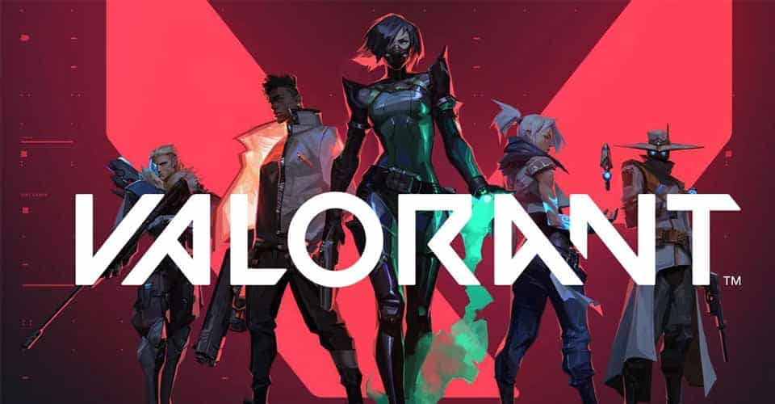

league of legends
Sieciowa gra komputerowa z gatunku multiplayer online battle arena . Została wyprodukowana i wydana przez studio
Riot Games. Została zapowiedziana 7 października 2008, a wydana 26 października 2009
Teamfight Tactics

To gra typu auto battler.ra wykorzystuje zasoby postaci z League of Legends i jest oparta na Dota Auto Chess, w której gracze rywalizują online z siedmioma innymi przeciwnikami
League of Runeterra
Jest cyfrową kolekcjonerską grą karcianą stworzoną i opublikowaną przez Riot Games. Został wydany 29 kwietnia 2020 roku dla systemów Microsoft Windows, Android i iOS.
Valorant
Sieciowa strzelanka pierwszoosobowa oparta na modelu free-to-play. Zapowiedziana 15 października 2019 jako „Project A”, ostatecznie ukazała się pod obecną nazwą 2 marca 2020.